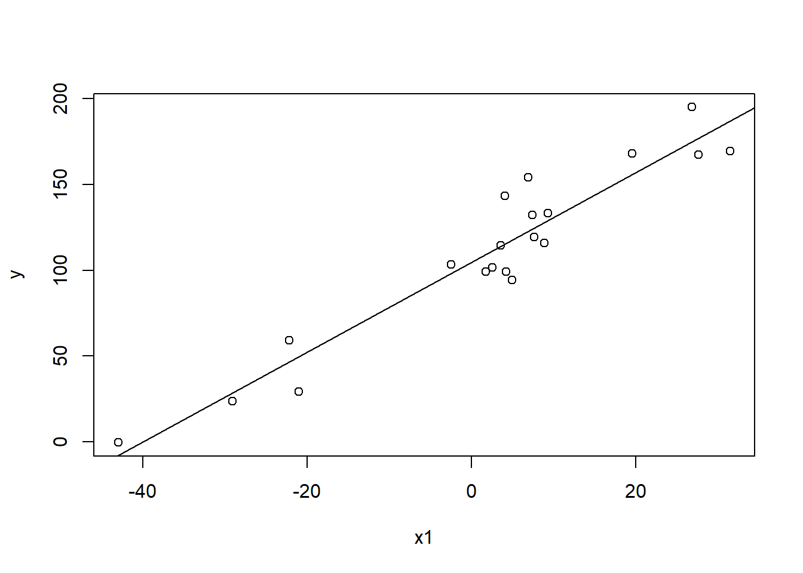
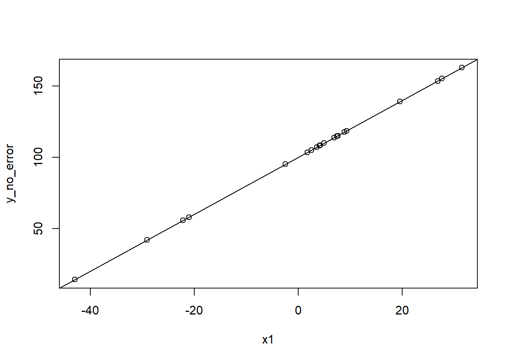

This page is part of the University of Colorado-Anschutz Medical Campus’ BIOS 6618 Recitation collection. To view other questions, you can view the BIOS 6618 Recitation collection page or use the search bar to look for keywords.
Hypothesis Testing in Our Regression Models
There are tons of things we can conduct inference on for our regression models. We’ll start by simulating data and building our model up from the simplest (no predictors) to the most complete (all simulated predictors).
Code
set.seed(1104) # set seed for reproducibility# Simulate data to use for our true regression modelx1 <-rnorm(n=20,mean=10,sd=15) # simulate a continuous predictorx2 <-rexp(n=20,rate=0.25) # simulate another continuous predictorx3 <-rbinom(n=20, size=1, prob=0.5) # simulate a binary predictor# Simulate the error term for our regression model with SD=25error <-rnorm(n=20, mean=0, sd=25) # Create the "true" model where x2 and x3 both have a slope of 0 (i.e., don't contribute to our prediction)y <-100+2*x1 +0*x2 +0*x3 + error
The “true regression model” we have simulated is \(Y = \beta_0 + \beta_1 X_1 + \epsilon\) where \(\epsilon \sim N(\mu=0,\sigma=25)\). And here, since we are simulated, we also know that \(\beta_0=100\) and \(\beta_1=2\), even though our sample will have its error in estimating this relationship and this won’t precisely hold.
Let’s take a quick look at the simulated data for our outcome and 3 predictors in our sample of \(n=20\):
Based on our simulation, even though we might envision some possible trend or relationship for \(X_2\) and \(X_3\), we know these are simulated under the null hypothesis that their corresponding beta coefficient should equal 0.
The Intercept Only Model
The simplest model to predict what we expect the outcome to be based on our data is a linear regression model that only contains the intercept. This is equivalent to calculating the mean for our outcome, \(\bar{Y}\), as we will see below.
The true regression model here is: \(Y = \beta_0 + \epsilon ; \; \epsilon \sim N(0,\sigma^{2}_{e})\).
Let’s fit our intercept-only linear regression model and write our estimated/predicted regression equation. Then, we’ll highlight some points to consider with respect to the model and what we test.
Code
mod_intonly <-lm(y ~1) # the "1" indicates that only an intercept should be fit (i.e., no predictors)summary(mod_intonly)
Call:
lm(formula = y ~ 1)
Residuals:
Min 1Q Median 3Q Max
-111.415 -13.067 4.244 34.839 83.965
Coefficients:
Estimate Std. Error t value Pr(>|t|)
(Intercept) 111.08 11.58 9.592 1.02e-08 ***
---
Signif. codes: 0 '***' 0.001 '**' 0.01 '*' 0.05 '.' 0.1 ' ' 1
Residual standard error: 51.79 on 19 degrees of freedom
Our estimated regression model based on our data is: \(\hat{Y} = \hat{\beta}_{0} = 111.08\).
Sample Mean and the Intercept (in an Intercept-Only Model)
We can see that this is equal to our sample mean for \(\bar{Y}\):
Code
mean(y) # compare to mean
[1] 111.0772
Where is my Overall \(F\)-test (in an Intercept-Only Model)?
Notice that the regression summary output does not include the overall \(F\)-test. This is because the overall \(F\)-test evaluates the hypothesis that the beta coefficients for all our predictors are equal to 0 (i.e., \(H_0 \colon \beta_1 = \beta_2 = \cdots = \beta_{p} = 0\)). However, we have no predictors in this model! If we think back to the ANOVA table:
Code
library(kableExtra)anova_df <-data.frame( 'Source'=c('Model','Error','Total'),'Sums of Squares'=c('SS~Model~','SS~Error~','SS~Total~'),'Degrees of Freedom'=c('p','n-p-1','n-1'),'Mean Square'=c('MS~Model~','MS~Error~',''),'F Value'=c('MS~Model~/MS~Error~','',''),'p-value'=c('Pr(F~p,n-p-1~ > F)','',''))kbl(anova_df, col.names=c('Source','Sums of Squares','Degrees of Freedom','Mean Square','F-value','p-value'),align='lccccc', escape=F) %>%kable_styling(bootstrap_options ="striped", full_width = F, position ="left")
Source
Sums of Squares
Degrees of Freedom
Mean Square
F-value
p-value
Model
SSModel
p
MSModel
MSModel/MSError
Pr(Fp,n-p-1 > F)
Error
SSError
n-p-1
MSError
Total
SSTotal
n-1
We can see that we have no Model degrees of freedom since \(p=0\).
Hypothesis Testing for the Intercept
We can still test the null hypothesis that the intercept is equal to 0. In other words, \(H_0\colon \beta_0=0\) versus \(H_1\colon \beta_0 \neq 0\). While we can conduct these tests “by hand”, we can also leverage our regression output from above to note that \(t=\) 9.592 and \(p=\) 1.02e-08 \(<0.001\).
If we wanted to verify or calculate these values by hand, we see that \(t = \frac{111.08}{11.58} = 9.592\) and we can compare this to a \(t_{n-p-1} = t_{n-1} = t_{19}\) distribution to calculate our p-value: 2*pt(9.592, df=19, lower.tail=F) = 1.0251487^{-8}. Recall, we double our p-value since we have a two-sided hypothesis test.
In this case, since \(p<0.001\), we reject our null hypothesis and conclude that the intercept is significantly different from 0.
Hypothesis Testing for Other Null Values
The default value we tend to use for our hypothesis test of the intercept and slope terms is against a null of 0. However, we can test whatever value we wish (and might be more biologically meaningful). For example, in our calculation above “by hand” we could test \(H_0\colon \beta_0=100\) versus \(H_1\colon \beta_0 \neq 100\):
We can calculate our p-value similarly to our above example: 2*pt(0.9568221, df=19, lower.tail=F) = 0.3506744. Since \(p>0.05\), we fail to reject the null hypothesis that the intercept is significantly different from 100.
This idea also extends to our simple and multiple linear regression models, where we can test any of our beta coefficients against any proposed null value of interest.
The Simple Linear Regression Model
From our scatterplots above (and because we simulated the data), we know that there is additional information beyond just our outcome that is useful to incorporate. For example, \(X_1\) in our simulation has \(\beta_1 = 2\), so the outcome should be better described by incorporating this information. This, in turn, provides a more accurate estimate of what an observation’s outcome should be than just naively using \(\bar{Y}\) for everyone.
The true regression model here is: \(Y = \beta_0 + \beta_1 X_{1} + \epsilon ; \; \epsilon \sim N(0,\sigma^{2}_{e})\).
Let’s fit our simple linear regression model and write our estimated/predicted regression equation. Then, we’ll highlight some points to consider with respect to the model and what we test.
Code
mod_slr <-lm(y ~ x1)summary(mod_slr)
Call:
lm(formula = y ~ x1)
Residuals:
Min 1Q Median 3Q Max
-23.181 -10.477 -2.215 9.139 31.422
Coefficients:
Estimate Std. Error t value Pr(>|t|)
(Intercept) 104.6118 3.6339 28.79 < 2e-16 ***
x1 2.6131 0.1956 13.36 8.82e-11 ***
---
Signif. codes: 0 '***' 0.001 '**' 0.01 '*' 0.05 '.' 0.1 ' ' 1
Residual standard error: 16.11 on 18 degrees of freedom
Multiple R-squared: 0.9084, Adjusted R-squared: 0.9033
F-statistic: 178.4 on 1 and 18 DF, p-value: 8.824e-11
Our estimated regression model based on our data is: \(\hat{Y} = \hat{\beta}_{0} + \hat{\beta}_{1}X_{1} = 104.6118 + 2.6131 X_{1}\).
We can add this line to earlier scatterplot before examining how to test various questions of interest:
Code
plot(x1,y)abline(mod_slr)

Hypothesis Testing for the Intercept
Like in our intercept-only model, we can test a null hypothesis that the intercept is equal to 0:
This information can be easily extracted from our summary table output, where we see that \(t=28.79\) and \(p<0.001\). Therefore, we would reject the null hypothesis that the intercept is equal to 0. In other words, based on our sample and the simple linear regression model we fit, when the predictor \(X_1 = 0\), the predicted average value for our outcome is 104.6118.
In many cases, the context implies that the intercept is nonsensical to interpret or it relies on extrapolation of our data. For example, if we had a sample of 30-60 year olds where we measured the amount of time they spent using a computer each week, the intercept would represent the average computer use for a 0 year old. This makes no sense given a 0 year old was literally just born and is highly unlikely to actively use a computer on their own. Further, our sample only included 30-60 year olds, so even if a 0 year old could use a computer, we would have to extrapolate our findings down to a 0 year old, which may not reflect their actual use pattern anyway.
Hypothesis Testing for the Slope
More often, we are interested in testing if the beta coefficient for our predictor (often called the slope) is significantly different from 0:
In the context of linear regression, a slope of 0 would indicate that there is no change in the outcome (\(Y\)) across the range of the predictor (\(X_1\)).
For our SLR model, we can likewise extract the information from our summary table, where we see that \(t=13.36\) and \(p<0.001\). Therefore, we would reject the null hypothesis that the slope is 0.
We can also compare the output p-value to one we calculate in R based on the \(t\) statistic: 2*pt(summary(mod_slr)$coefficients['x1','t value'], df=18, lower.tail=F)= 8.824259^{-11}. Recall, we are using a \(t_{n-p-1} = t_{20-1-1} = t_{18}\) distribution as our reference.
Hypothesis Testing for the Overall Model Fit (the Overall \(F\)-test)
A final question that may be of interest if is the overall model with all predictors is better at predicting the outcome than just the sample mean of the outcome alone. In other words, is it useful to include all the predictors I may have in my model? Or have I made something more complicated than just using \(\bar{Y}\) that doesn’t give me any benefit?
To address this question, we can conduct an overall \(F\)-test. This examines the hypothesis for our simple linear regression that
This should look familiar, since it is the same hypotheses we evaluated for hypothesis testing of the slope! For simple linear regression, we actually have a direct relationship between the \(t\) and \(F\) statistics, since they are evaluating identical hypotheses.
From our summary output, we see that \(F=178.4\), which is equal (after considering the output has rounded to only 2 decimal places) to \(t^2 = (13.36)^2 = 178.4896\).
What About SLR \(X_2\) and \(X_3\)?
In our simulation, we set both \(X_2\) and \(X_3\) to have beta coefficients equal to 0. If we run a simple linear regression model and examine the summary output, we see:
Code
summary(lm(y ~ x2))
Call:
lm(formula = y ~ x2)
Residuals:
Min 1Q Median 3Q Max
-73.402 -41.576 2.492 37.701 70.352
Coefficients:
Estimate Std. Error t value Pr(>|t|)
(Intercept) 150.273 20.925 7.182 1.1e-06 ***
x2 -8.101 3.730 -2.172 0.0435 *
---
Signif. codes: 0 '***' 0.001 '**' 0.01 '*' 0.05 '.' 0.1 ' ' 1
Residual standard error: 47.36 on 18 degrees of freedom
Multiple R-squared: 0.2076, Adjusted R-squared: 0.1636
F-statistic: 4.717 on 1 and 18 DF, p-value: 0.04347
Since \(p=0.0435 < 0.05\) we would reject the null hypothesis that the slope is equal to 0. Since we simulated a null setting, this represents a type I error!
Code
summary(lm(y ~ x3))
Call:
lm(formula = y ~ x3)
Residuals:
Min 1Q Median 3Q Max
-93.839 -34.215 5.726 29.999 101.541
Coefficients:
Estimate Std. Error t value Pr(>|t|)
(Intercept) 93.50 13.89 6.73 2.62e-06 ***
x3 43.94 21.97 2.00 0.0608 .
---
Signif. codes: 0 '***' 0.001 '**' 0.01 '*' 0.05 '.' 0.1 ' ' 1
Residual standard error: 48.12 on 18 degrees of freedom
Multiple R-squared: 0.1819, Adjusted R-squared: 0.1364
F-statistic: 4.002 on 1 and 18 DF, p-value: 0.06077
Since \(p=0.0608 > 0.05\), we would fail to reject the null hypothesis.
The Multiple Linear Regression Model
Even though we know from our simulation that \(X_2\) and \(X_3\) are not used in the calculation of \(Y\), in the real world we would not know this information. Rather, we might want to fit a multiple linear regression model that includes all possible predictors. Under this model, we are assuming that the true regression model is: \(Y = \beta_0 + \beta_1 X_{1} + \beta_{2} X_{2} + \beta_{3} X_{3} + \epsilon ; \; \epsilon \sim N(0,\sigma^{2}_{e})\). NOTE: We know that this is technically the “wrong” true model based on our simulation, but it is the underlying model we are trying to estimate when fitting this multiple linear regression model.
Let’s fit our multiple linear regression model and write our estimated/predicted regression equation. Then, we’ll highlight some points to consider with respect to the model and what we test.
Code
mod_mlr <-lm(y ~ x1 + x2 + x3)summary(mod_mlr)
Call:
lm(formula = y ~ x1 + x2 + x3)
Residuals:
Min 1Q Median 3Q Max
-20.392 -13.180 1.295 7.935 24.401
Coefficients:
Estimate Std. Error t value Pr(>|t|)
(Intercept) 93.1351 9.7269 9.575 5.01e-08 ***
x1 2.7714 0.2491 11.127 6.09e-09 ***
x2 2.1181 1.5659 1.353 0.195
x3 2.0920 8.4005 0.249 0.807
---
Signif. codes: 0 '***' 0.001 '**' 0.01 '*' 0.05 '.' 0.1 ' ' 1
Residual standard error: 16.18 on 16 degrees of freedom
Multiple R-squared: 0.9178, Adjusted R-squared: 0.9023
F-statistic: 59.52 on 3 and 16 DF, p-value: 6.722e-09
Our estimated regression model based on our data is:
Testing the Overall Model Fit (the Overall \(F\)-Test)
One question we might ask, is if any of our predictors contribute meaningfully to the prediction of \(Y\) above and beyond just using \(\bar{Y}\) alone. This is evaluated using our overall \(F\)-test, where the hypotheses are
\[ H_0\colon \beta_1 = \beta_2 = \beta_3 = 0 \text{ vs. } H_1\colon \text{ at least one } \beta_{k} \neq 0 \]
We can directly extract this information from our output, where we see \(F=59.52\) with \(p<0.001\). Therefore, we reject \(H_0\) and conclude that at least one of our beta coefficients is significantly different from 0. However, we have no idea which beta coefficient(s) are significantly different from 0 without further investigation.
From the output, it is worth highlighting that we are making a comparison to an \(F_{k,n-k-1}\) distribution, where \(k\) is the number of predictors: \(F_{3,20-3-1} = F_{3,16}\).
Testing a Subset of the Predictors (the Partial \(F\)-Test)
Another question we may be interested in answering in a multiple linear regression model, is if some subset of our predictors contribute meaningfully to the prediction of \(Y\) above and beyond the reduced model that excludes those predictors. This can be tested with the partial \(F\)-test. For example, we may want to test if adding \(X_{2}\) and \(X_{3}\) is meaningful above and beyond just including \(X_{1}\) in our model:
\[ H_0\colon \beta_2 = \beta_3 = 0 \text{ vs. } H_1\colon \text{ at least one } \beta_{k} \neq 0 \; (k \in 2,3) \]
In our Week 10 Practice Problem Solutions, we have an example of implementing a partial F-test where you can generate the ANOVA tables for the full and reduced models and calculate the partial F-statistic by hand. For brevity, we’ll focus here on using the anova function to compare our models:
Code
anova(mod_mlr, mod_slr, test='F')
Analysis of Variance Table
Model 1: y ~ x1 + x2 + x3
Model 2: y ~ x1
Res.Df RSS Df Sum of Sq F Pr(>F)
1 16 4190.3
2 18 4669.5 -2 -479.19 0.9149 0.4205
Here we see that our partial \(F\)-test has \(F=0.9149\) and \(p=0.4205\). In other words, since \(p>0.05\) we fail to reject the null hypothesis that at least one of our beta coefficients for \(X_2\) and \(X_3\) is not equal to 0. This suggests that we could focus on the simple linear regression model with just \(X_1\) for a simpler, more parsimonious model. (The big potential caveat here for the real world is that variables may still be meaningful if they serve as a confounder, mediator, moderator, precision variable, etc. and your context may still suggest you keep a statistically insignificant predictor in your model!)
Testing a Single Predictor (the \(t\)-test)
The third question we may want to investigate is if a specific predictor is significantly adding to our model, above and beyond the information contributed by other variables in the model. Assuming we still have our full multiple linear regression model with 3 predictors, the major change here is our interpretation from a simple linear regression model.
Focusing on \(X_1\), we see that \(t=11.127\) and \(p<0.001\), so we would reject the null hypothesis that the slope is 0 (i.e., that \(\beta_1 = 0\)). This estimate of our estimate and standard error (and therefore the \(t\)-value and p-value) are dependent upon the other predictors in our model. For example, our t-test here is based on \(t_{n-p-1} = t_{20-3-1} = t_{16}\), but in our SLR it was based on \(t_{18}\).
With regards to interpretation, it is mostly similar with a small bit of added language:
SLR Interpretation of \(\beta_1\): For a one unit increase in \(X_1\), the average change in \(Y\) is \(\beta_{1}\).
MLR Interpretation of \(\beta_1\): For a one unit increase in \(X_1\), the average change in \(Y\) is \(\beta_{1}\) after accounting for other variables in the model.
For the MLR interpretation, other similar phrasings include after adjusting for other variables in the model, after fixing our other predictors, after fixing \(X_{2}\) and \(X_{3}\), etc. We need some form of language that notes the estimate is conditional on the other predictors included in our model.
Sanity Check: What If We Didn’t Simulate Error?
As a final note, what would happen if we didn’t include the error term in our calculation of y above? Let’s see what our regression model would return for the SLR case:
Warning in summary.lm(lm(y_no_error ~ x1)): essentially perfect fit: summary
may be unreliable
Call:
lm(formula = y_no_error ~ x1)
Residuals:
Min 1Q Median 3Q Max
-2.275e-14 -1.142e-14 -6.265e-15 -4.132e-15 1.560e-13
Coefficients:
Estimate Std. Error t value Pr(>|t|)
(Intercept) 1.000e+02 8.609e-15 1.162e+16 <2e-16 ***
x1 2.000e+00 4.635e-16 4.315e+15 <2e-16 ***
---
Signif. codes: 0 '***' 0.001 '**' 0.01 '*' 0.05 '.' 0.1 ' ' 1
Residual standard error: 3.816e-14 on 18 degrees of freedom
Multiple R-squared: 1, Adjusted R-squared: 1
F-statistic: 1.862e+31 on 1 and 18 DF, p-value: < 2.2e-16
There is a warning noting we have a perfect fit, so the summary may be unreliable. Indeed, we see that without the error term, we can perfectly predict our beta coefficients and have no variability around the estimates:
Code
plot(x1, y_no_error)abline(lm(y_no_error ~ x1))

In reality, this is very rare (if not almost impossible). Not only is there usually natural variability in the data even if we had perfect measurement, there are other sources of error (e.g., measurement error in how we collect data that adds variability). If you do wind up with a solution with perfect prediction, it is worth thinking through the model, data, and results before too widely disseminating your findings.
Source Code
---title: "Hypothesis Testing in Intercept-Only, Simple, and Multiple Linear Regression Models"author: name: Alex Kaizer roles: "Instructor" affiliation: University of Colorado-Anschutz Medical Campustoc: truetoc_float: truetoc-location: leftformat: html: code-fold: show code-overflow: wrap code-tools: true---```{r, echo=F, message=F, warning=F}library(kableExtra)library(dplyr)```This page is part of the University of Colorado-Anschutz Medical Campus' [BIOS 6618 Recitation](/recitation/index.qmd) collection. To view other questions, you can view the [BIOS 6618 Recitation](/recitation/index.qmd) collection page or use the search bar to look for keywords.# Hypothesis Testing in Our Regression ModelsThere are tons of things we can conduct inference on for our regression models. We'll start by simulating data and building our model up from the simplest (no predictors) to the most complete (all simulated predictors).```{r}set.seed(1104) # set seed for reproducibility# Simulate data to use for our true regression modelx1 <-rnorm(n=20,mean=10,sd=15) # simulate a continuous predictorx2 <-rexp(n=20,rate=0.25) # simulate another continuous predictorx3 <-rbinom(n=20, size=1, prob=0.5) # simulate a binary predictor# Simulate the error term for our regression model with SD=25error <-rnorm(n=20, mean=0, sd=25) # Create the "true" model where x2 and x3 both have a slope of 0 (i.e., don't contribute to our prediction)y <-100+2*x1 +0*x2 +0*x3 + error```The "true regression model" we have simulated is $Y = \beta_0 + \beta_1 X_1 + \epsilon$ where $\epsilon \sim N(\mu=0,\sigma=25)$. And here, since we are simulated, we also know that $\beta_0=100$ and $\beta_1=2$, even though our sample will have its *error* in estimating this relationship and this won't precisely hold.Let's take a quick look at the simulated data for our outcome and 3 predictors in our sample of $n=20$:```{r, class.source = 'fold-hide'}#| code-fold: truepar(mfrow=c(2,2), mar=c(5.1,4.1,1.1,1.1))plot(x1,y)plot(x2,y)plot(x3,y)```Based on our simulation, even though we might envision some possible trend or relationship for $X_2$ and $X_3$, we know these are simulated under the null hypothesis that their corresponding beta coefficient should equal 0.## The Intercept Only ModelThe simplest model to predict what we expect the outcome to be based on our data is a linear regression model that *only contains the intercept*. This is equivalent to calculating the mean for our outcome, $\bar{Y}$, as we will see below.The true regression model here is: $Y = \beta_0 + \epsilon ; \; \epsilon \sim N(0,\sigma^{2}_{e})$.Let's fit our intercept-only linear regression model and write our estimated/predicted regression equation. Then, we'll highlight some points to consider with respect to the model and what we test.```{r}mod_intonly <-lm(y ~1) # the "1" indicates that only an intercept should be fit (i.e., no predictors)summary(mod_intonly) ```Our estimated regression model based on our data is: $\hat{Y} = \hat{\beta}_{0} = 111.08$.### Sample Mean and the Intercept (in an Intercept-Only Model)We can see that this is equal to our sample mean for $\bar{Y}$:```{r}mean(y) # compare to mean```### Where is my Overall $F$-test (in an Intercept-Only Model)?Notice that the regression summary output *does not include the overall $F$-test*. This is because the overall $F$-test evaluates the hypothesis that the beta coefficients for *all* our predictors are equal to 0 (i.e., $H_0 \colon \beta_1 = \beta_2 = \cdots = \beta_{p} = 0$). However, we have no predictors in this model! If we think back to the ANOVA table:```{r, message=F, class.source = 'fold-hide'}#| code-fold: true#| fig-cap: "We can see that we have no **Model** degrees of freedom since $p=0$."#| filters:#| - parse-latexlibrary(kableExtra)anova_df <-data.frame( 'Source'=c('Model','Error','Total'),'Sums of Squares'=c('SS~Model~','SS~Error~','SS~Total~'),'Degrees of Freedom'=c('p','n-p-1','n-1'),'Mean Square'=c('MS~Model~','MS~Error~',''),'F Value'=c('MS~Model~/MS~Error~','',''),'p-value'=c('Pr(F~p,n-p-1~ > F)','',''))kbl(anova_df, col.names=c('Source','Sums of Squares','Degrees of Freedom','Mean Square','F-value','p-value'),align='lccccc', escape=F) %>%kable_styling(bootstrap_options ="striped", full_width = F, position ="left")```### Hypothesis Testing for the Intercept We can still test the null hypothesis that the intercept is equal to 0. In other words, $H_0\colon \beta_0=0$ versus $H_1\colon \beta_0 \neq 0$. While we can conduct these tests "by hand", we can also leverage our regression output from above to note that $t=$ `r round(summary(mod_intonly)$coefficients['(Intercept)','t value'],3)` and $p=$ 1.02e-08 $<0.001$.If we wanted to verify or calculate these values by hand, we see that $t = \frac{111.08}{11.58} = 9.592$ and we can compare this to a $t_{n-p-1} = t_{n-1} = t_{19}$ distribution to calculate our p-value: `2*pt(9.592, df=19, lower.tail=F)` = `r 2*pt(9.592, df=19, lower.tail=F)`. Recall, we double our p-value since we have a two-sided hypothesis test.In this case, since $p<0.001$, we reject our null hypothesis and conclude that the intercept is significantly different from 0.### Hypothesis Testing for Other Null ValuesThe default value we tend to use for our hypothesis test of the intercept and slope terms is against a null of 0. However, we can test whatever value we wish (and might be more biologically meaningful). For example, in our calculation above "by hand" we could test $H_0\colon \beta_0=100$ versus $H_1\colon \beta_0 \neq 100$:$$ t = \frac{\hat{\beta}_{0} - \beta_{0}}{SE(\hat{\beta}_{0})} = \frac{111.08 - 100}{11.58} = \frac{11.08}{11.58} = 0.9568221 $$We can calculate our p-value similarly to our above example: `2*pt(0.9568221, df=19, lower.tail=F)` = `r 2*pt(0.9568221, df=19, lower.tail=F)`. Since $p>0.05$, we fail to reject the null hypothesis that the intercept is *significantly different from 100*.This idea also extends to our simple and multiple linear regression models, where we can test any of our beta coefficients against any proposed null value of interest.## The Simple Linear Regression ModelFrom our scatterplots above (and because we simulated the data), we know that there is additional information beyond just our outcome that is useful to incorporate. For example, $X_1$ in our simulation has $\beta_1 = 2$, so the outcome should be better described by incorporating this information. This, in turn, provides a more accurate estimate of what an observation's outcome should be than just naively using $\bar{Y}$ for everyone.The true regression model here is: $Y = \beta_0 + \beta_1 X_{1} + \epsilon ; \; \epsilon \sim N(0,\sigma^{2}_{e})$.Let's fit our simple linear regression model and write our estimated/predicted regression equation. Then, we'll highlight some points to consider with respect to the model and what we test.```{r}mod_slr <-lm(y ~ x1)summary(mod_slr) ```Our estimated regression model based on our data is: $\hat{Y} = \hat{\beta}_{0} + \hat{\beta}_{1}X_{1} = 104.6118 + 2.6131 X_{1}$.We can add this line to earlier scatterplot before examining how to test various questions of interest:```{r}plot(x1,y)abline(mod_slr)```### Hypothesis Testing for the Intercept Like in our intercept-only model, we can test a null hypothesis that the intercept is equal to 0:$$ H_0\colon \beta_0 = 0 \text{ vs. } H_1\colon \beta_0 \neq 0 $$This information can be easily extracted from our summary table output, where we see that $t=28.79$ and $p<0.001$. Therefore, we would reject the null hypothesis that the intercept is equal to 0. In other words, based on our sample and the simple linear regression model we fit, when the predictor $X_1 = 0$, the predicted average value for our outcome is 104.6118.In many cases, the context implies that the intercept is nonsensical to interpret or it relies on *extrapolation* of our data. For example, if we had a sample of 30-60 year olds where we measured the amount of time they spent using a computer each week, the intercept would represent the average computer use for a 0 year old. This makes no sense given a 0 year old was literally just born and is highly unlikely to actively use a computer on their own. Further, our sample only included 30-60 year olds, so even if a 0 year old could use a computer, we would have to extrapolate our findings down to a 0 year old, which may not reflect their actual use pattern anyway.### Hypothesis Testing for the SlopeMore often, we are interested in testing if the beta coefficient for our predictor (often called the slope) is significantly different from 0:$$ H_0\colon \beta_1 = 0 \text{ vs. } H_1\colon \beta_1 \neq 0 $$In the context of linear regression, a slope of 0 would indicate that there is no change in the outcome ($Y$) across the range of the predictor ($X_1$).For our SLR model, we can likewise extract the information from our summary table, where we see that $t=13.36$ and $p<0.001$. Therefore, we would reject the null hypothesis that the slope is 0.We can also compare the output p-value to one we calculate in R based on the $t$ statistic: `2*pt(summary(mod_slr)$coefficients['x1','t value'], df=18, lower.tail=F)`= `r 2*pt(summary(mod_slr)$coefficients['x1','t value'], df=18, lower.tail=F)`. Recall, we are using a $t_{n-p-1} = t_{20-1-1} = t_{18}$ distribution as our reference.### Hypothesis Testing for the Overall Model Fit (the Overall $F$-test)A final question that may be of interest if is the *overall model with all predictors is better at predicting the outcome than just the sample mean of the outcome alone*. In other words, is it useful to include all the predictors I may have in my model? Or have I made something more complicated than just using $\bar{Y}$ that doesn't give me any benefit?To address this question, we can conduct an overall $F$-test. This examines the hypothesis for our simple linear regression that $$ H_0\colon \beta_1 = 0 \text{ vs. } H_1\colon \beta_1 \neq 0 $$**This should look familiar, since it is the same hypotheses we evaluated for hypothesis testing of the slope!** For simple linear regression, we actually have a direct relationship between the $t$ and $F$ statistics, since they are evaluating identical hypotheses.From our summary output, we see that $F=178.4$, which is equal (after considering the output has rounded to only 2 decimal places) to $t^2 = (13.36)^2 = 178.4896$.### What About SLR $X_2$ and $X_3$?In our simulation, we set both $X_2$ and $X_3$ to have beta coefficients equal to 0. If we run a simple linear regression model and examine the summary output, we see:```{r}summary(lm(y ~ x2))```Since $p=0.0435 < 0.05$ we would reject the null hypothesis that the slope is equal to 0. **Since we simulated a null setting, this represents a type I error!**```{r}summary(lm(y ~ x3))```Since $p=0.0608 > 0.05$, we would fail to reject the null hypothesis. ## The Multiple Linear Regression ModelEven though we know from our simulation that $X_2$ and $X_3$ are not used in the calculation of $Y$, in the real world we would not know this information. Rather, we might want to fit a multiple linear regression model that includes all possible predictors. Under this model, we are assuming that the true regression model is: $Y = \beta_0 + \beta_1 X_{1} + \beta_{2} X_{2} + \beta_{3} X_{3} + \epsilon ; \; \epsilon \sim N(0,\sigma^{2}_{e})$. **NOTE: We know that this is technically the "wrong" true model based on our simulation, but it is the underlying model we are trying to estimate when fitting this multiple linear regression model.**Let's fit our multiple linear regression model and write our estimated/predicted regression equation. Then, we'll highlight some points to consider with respect to the model and what we test.```{r}mod_mlr <-lm(y ~ x1 + x2 + x3)summary(mod_mlr) ```Our estimated regression model based on our data is: $$ \hat{Y} = \hat{\beta}_{0} + \hat{\beta}_{1}X_{1} + \hat{\beta}_{2}X_{2} + \hat{\beta}_{3}X_{3}= 93.1351 + 2.7714 X_{1} + 2.1181 X_{2} + 2.0920 X_{3}. $$### Testing the Overall Model Fit (the Overall $F$-Test)One question we might ask, is if any of our predictors contribute meaningfully to the prediction of $Y$ above and beyond just using $\bar{Y}$ alone. This is evaluated using our overall $F$-test, where the hypotheses are $$ H_0\colon \beta_1 = \beta_2 = \beta_3 = 0 \text{ vs. } H_1\colon \text{ at least one } \beta_{k} \neq 0 $$We can directly extract this information from our output, where we see $F=59.52$ with $p<0.001$. Therefore, we reject $H_0$ and conclude that at least one of our beta coefficients is significantly different from 0. However, we have no idea *which* beta coefficient(s) are significantly different from 0 without further investigation.From the output, it is worth highlighting that we are making a comparison to an $F_{k,n-k-1}$ distribution, where $k$ is the number of predictors: $F_{3,20-3-1} = F_{3,16}$.### Testing a Subset of the Predictors (the Partial $F$-Test)Another question we may be interested in answering in a multiple linear regression model, is if some subset of our predictors contribute meaningfully to the prediction of $Y$ above and beyond the reduced model that excludes those predictors. This can be tested with the partial $F$-test. For example, we may want to test if adding $X_{2}$ and $X_{3}$ is meaningful above and beyond just including $X_{1}$ in our model:$$ H_0\colon \beta_2 = \beta_3 = 0 \text{ vs. } H_1\colon \text{ at least one } \beta_{k} \neq 0 \; (k \in 2,3) $$In our Week 10 Practice Problem Solutions, we have an example of implementing a partial F-test where you can generate the ANOVA tables for the full and reduced models and calculate the partial F-statistic by hand. For brevity, we'll focus here on using the `anova` function to compare our models:```{r}anova(mod_mlr, mod_slr, test='F')```Here we see that our partial $F$-test has $F=0.9149$ and $p=0.4205$. In other words, since $p>0.05$ we fail to reject the null hypothesis that at least one of our beta coefficients for $X_2$ and $X_3$ is not equal to 0. This suggests that we could focus on the simple linear regression model with just $X_1$ for a simpler, more parsimonious model. (*The big potential caveat here for the real world is that variables may still be meaningful if they serve as a confounder, mediator, moderator, precision variable, etc. and your context may still suggest you keep a statistically insignificant predictor in your model!*)### Testing a Single Predictor (the $t$-test)The third question we may want to investigate is if a specific predictor is significantly adding to our model, above and beyond the information contributed by other variables in the model. Assuming we still have our full multiple linear regression model with 3 predictors, the major change here is our interpretation from a simple linear regression model.Focusing on $X_1$, we see that $t=11.127$ and $p<0.001$, so we would reject the null hypothesis that the slope is 0 (i.e., that $\beta_1 = 0$). This estimate of our estimate and standard error (and therefore the $t$-value and p-value) are dependent upon the other predictors in our model. For example, our t-test here is based on $t_{n-p-1} = t_{20-3-1} = t_{16}$, but in our SLR it was based on $t_{18}$.With regards to interpretation, it is mostly similar with a small bit of added language:* **SLR Interpretation of $\beta_1$**: For a one unit increase in $X_1$, the average change in $Y$ is $\beta_{1}$.* **MLR Interpretation of $\beta_1$**: For a one unit increase in $X_1$, the average change in $Y$ is $\beta_{1}$ after accounting for other variables in the model.For the MLR interpretation, other similar phrasings include *after adjusting for other variables in the model*, *after fixing our other predictors*, *after fixing $X_{2}$ and $X_{3}$*, etc. We need some form of language that notes the estimate is conditional on the other predictors included in our model.## Sanity Check: What If We Didn't Simulate Error?As a final note, what would happen if we didn't include the error term in our calculation of `y` above? Let's see what our regression model would return for the SLR case:```{r}y_no_error <-100+2*x1 +0*x2 +0*x3 #exclude our earlier error termsummary(lm(y_no_error ~ x1))```There is a warning noting we have a perfect fit, so the summary may be unreliable. Indeed, we see that without the error term, we can perfectly predict our beta coefficients and have no variability around the estimates:```{r}plot(x1, y_no_error)abline(lm(y_no_error ~ x1))```In reality, this is very rare (if not almost impossible). Not only is there usually natural variability in the data even if we had perfect measurement, there are other sources of error (e.g., *measurement error* in how we collect data that adds variability). If you do wind up with a solution with perfect prediction, it is worth thinking through the model, data, and results before too widely disseminating your findings.